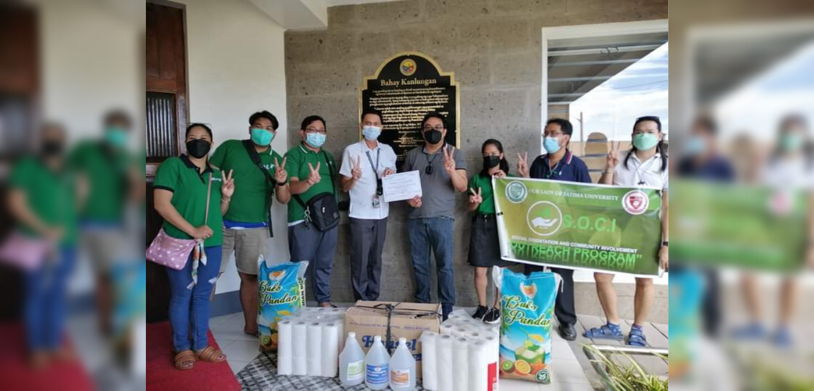

April 07, 2022
The CCS takes on another humanitarian and charitable effort for the social sphere and community. Giving back to the elderlies at Bahay Kanlungan in Valenzuela, they provided supplies for the soft-hearted and fragile retired bodies under the institutions' care on 07 April, 2022.
The project was headed by the Social Orientation and Community Involvement (SOCI) organization of the college, whose primary mission is to do projects for the benefit of the greater good—doing social involvements with micro-efforts in hopes of fully accumulating towards macro-changes. The organization is a core pillar of the University, which the College of Computer Studies fully embraces its duties. The donation drive was a collective effort of the faculty and the student Technocrats who all shared their valuable inputs.
Present in the provision of the essential supplies were the SOCI adviser, Mr. Jesfer Dela Cruz, IT Department Head Dr. Londren Velasco, Dean Raymond Macatangga, and few members from the faculty.
Bahay ng Kanlungan is a newly built home for the aged in Valenzuela City has been launched by the local government to “ensure that qualified senior citizens receive intensive long and short-term home care services through medical attention, psychotherapeutic treatment, psychosocial intervention, or spiritual care.” The Bahay Kanlungan in Barangay Maysan was inaugurated Friday as mandated by City Ordinance No. 863 Series of 2021. The institution is Valenzuela City’s third facility dedicated to the most vulnerable sectors of the society. Others are Bahay Kalinga, which was created for the neglected and abused children; and Bahay Pag-asa, which was established for juvenile offenders and children in conflict with the law.
Rise to the top!